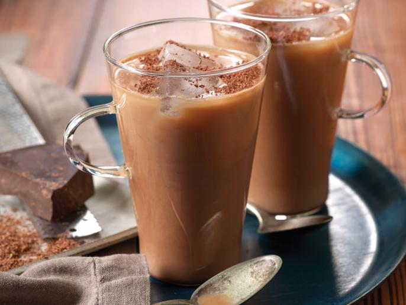

dark chocolate coffee

The best part about this cold coffee recipe is that you just need a few simple ingredients and you are all set to enjoy
ingredients
- 1 cup dark chocolate
- 1 teaspoon cocoa powder
- 1 cup heavy cream
- 2 tablespoon honey
- 2 Shot coffee
steps
- take a pan and add in dark chocolate cubes. once the chocolate cubes start melting, add in cocoa powder. mix it together.
- Once the cocoa powder and melted chocolate is mixed nicely. Add in 2 coffee shots along with heavy cream. Simmer the blend for 3-4 minutes, till it smooth and thick.
- Pour the blend in cups of your choice and add in 1 tablespoon honey and mix it nicely.
- serve with cookies